Probabilistic Graphical Models¶
Overview
This lecture covers Markov Random Fields, Factor Graphs, Belief Propagation, and their applications in computer vision including stereo reconstruction, multi-view reconstruction, and optical flow.
Structured Prediction¶
Spatial Regularization¶
where: - \(i \sim j\): neighboring pixels (4-connected grid) - \(\phi_{smooth}\): regularization encouraging similar disparities for neighbors - \(\phi_{data}(d_i) = \min(|I(x_i, y_i) - J(x_i - d_i, y_i)|, \sigma)\) - \(\phi_{smooth}(d_i, d_j) = \min(|d_i - d_j|, \tau)\)
Key Insight
Structured Prediction encodes local dependencies: - Probabilistic graphical models - Deep neural networks with image-based outputs (stereo, flow, semantics)
Markov Random Fields¶
Undirected Graphical Models (UGM)¶
Characteristics
- Pairwise (non-causal) relationships
- Can write down model and score configurations, but no explicit sampling
- Contingency constraints on node configurations
Cliques¶
Definition
A clique is a fully connected subgraph where every pair of nodes is directly connected.
Potentials¶
- Potential \(\phi(x)\): non-negative function of variable \(x\)
- Joint potential \(\phi(x_1, x_2, \ldots)\): non-negative function of a set of variables
UGM Definition¶
MRF Definition¶
Markov Random Field
For variables \(X = \{x_1, \ldots, x_M\}\), an MRF is defined as a product of potentials over (maximal) cliques \(\{X_k\}_{k=1}^K\):
where \(Z\) (partition function) normalizes the distribution.
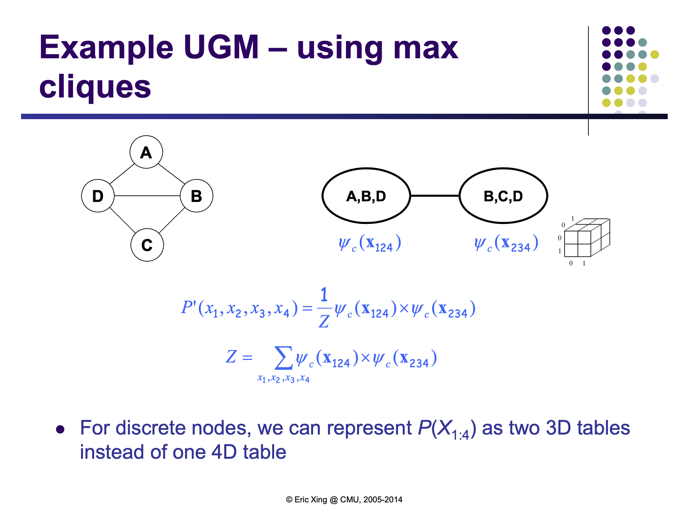
Properties¶
Marginalizing Makes Variables Dependent¶
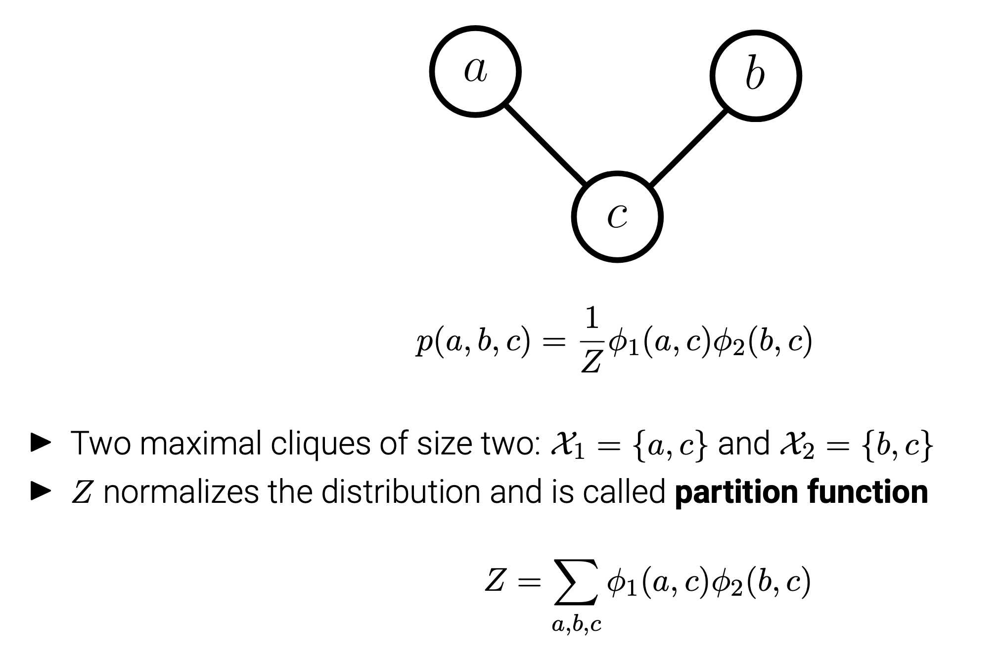
When marginalizing over \(c\), variables \(a\) and \(b\) become dependent:
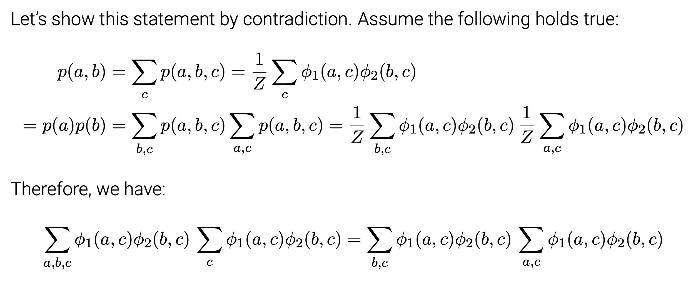
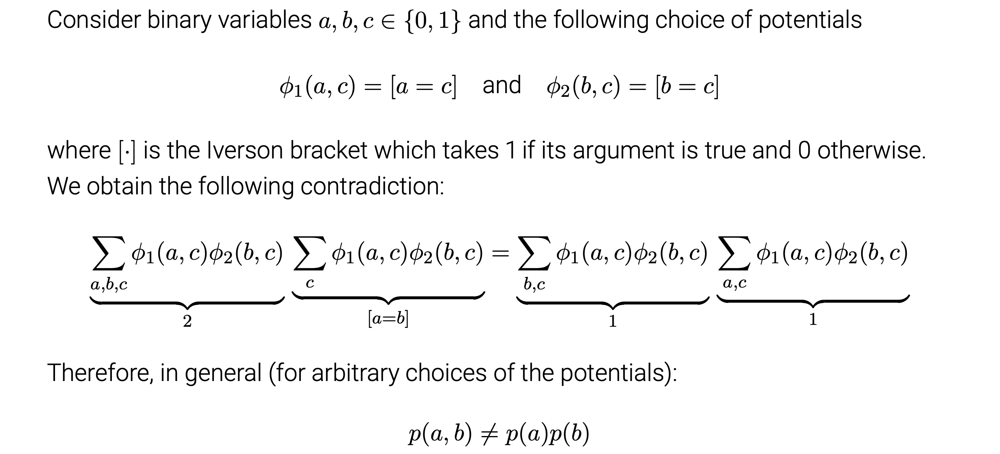
| a | b | c | φ₁(a,c) | φ₂(b,c) | Product | Sum |
|---|---|---|---|---|---|---|
| 0 | 0 | 0 | 1 | 1 | 1 | 1 |
| 0 | 0 | 1 | 0 | 0 | 0 | |
| 1 | 1 | 0 | 0 | 0 | 0 | 1 |
| 1 | 1 | 1 | 1 | 1 | 1 | |
| 0 | 1 | 0 | 1 | 0 | 0 | 0 |
| 0 | 1 | 1 | 0 | 1 | 0 | |
| 1 | 0 | 0 | 0 | 1 | 0 | 0 |
| 1 | 0 | 1 | 1 | 0 | 0 |
Conditioning Makes Variables Independent¶
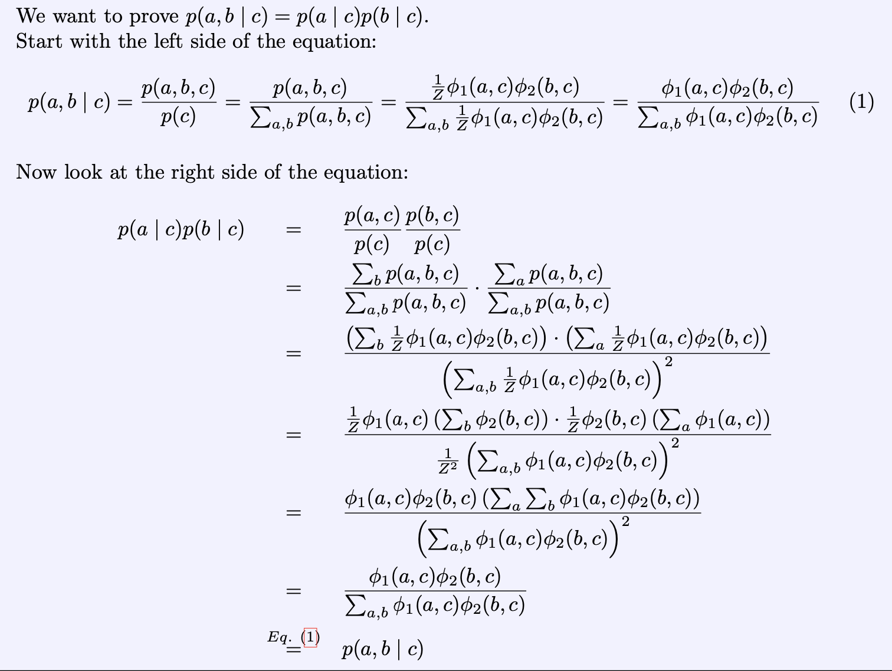
Global Markov Property¶
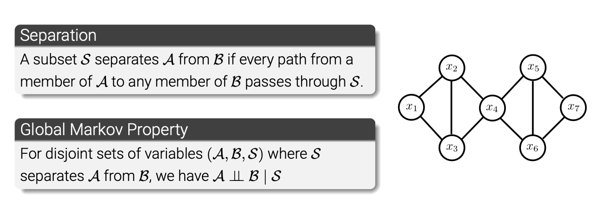
Local Markov Property¶
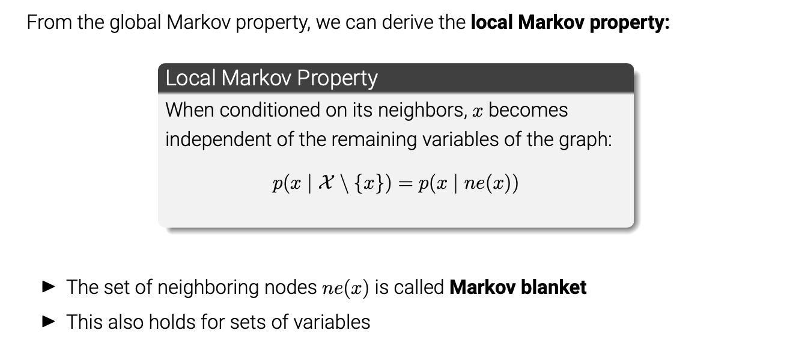
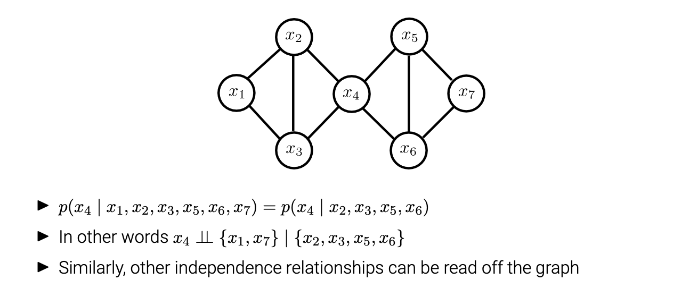
Markov Blanket
A node is conditionally independent of all other nodes given its Markov blanket.
Hammersley-Clifford Theorem¶
Theorem
A probability distribution with strictly positive mass satisfies Markov properties w.r.t. graph \(G\) if and only if it can be factorized over the (maximal) cliques.
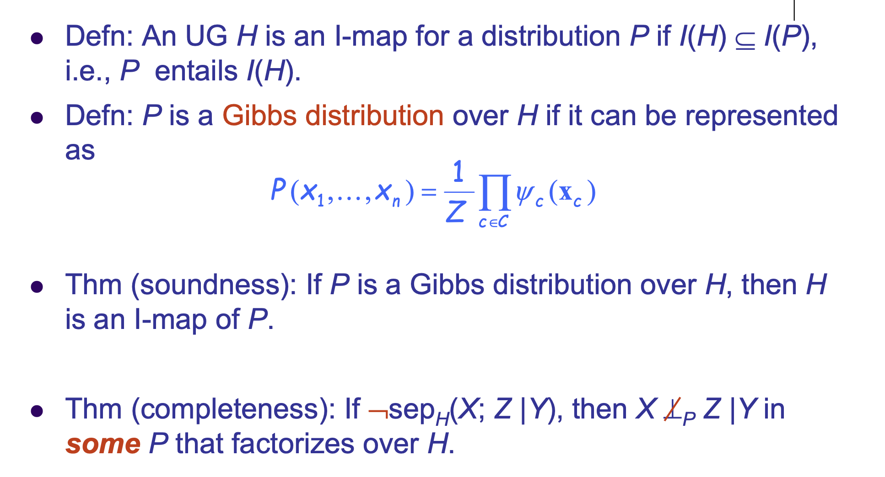
Factor Graphs¶
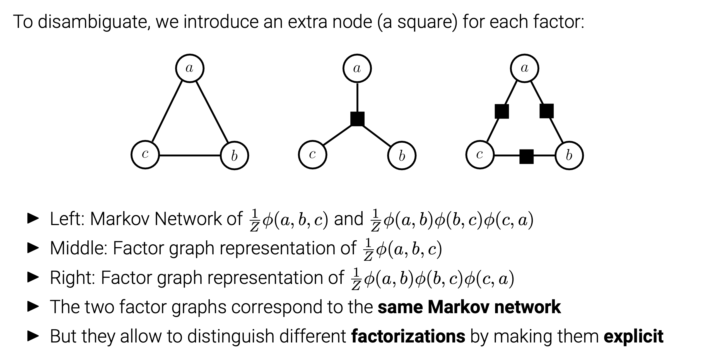
Example¶
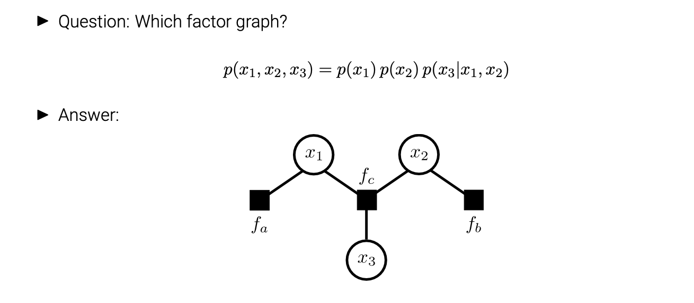
Belief Propagation¶
Inference in Chain-Structured Factor Graphs¶
Message Passing:
Key Property
BP assumes singly-connected graph with \(|V| - 1 = O(|V|)\) edges, greatly simplifying marginal computation.
Inference in Tree-Structured Factor Graphs¶
Factor-to-Variable Messages:
Variable-to-Factor Messages:
Sum-Product Algorithm¶
Belief Propagation Algorithm
Efficiently computes all messages for singly-connected graphs (chains, trees).
Steps: 1. Initialize leaf messages 2. Variable-to-Factor message: Product of incoming messages 3. Factor-to-Variable message: Sum over other variables 4. Repeat until all messages computed 5. Calculate marginals from messages
Log Representation¶
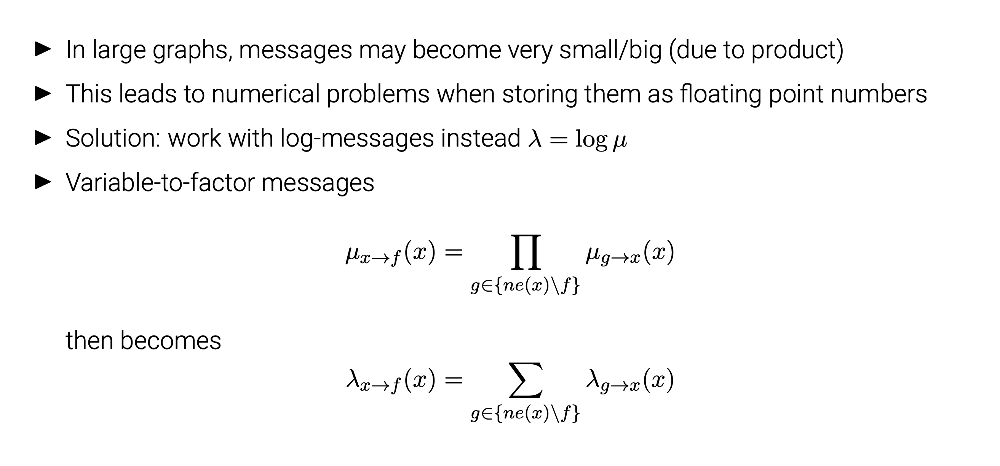
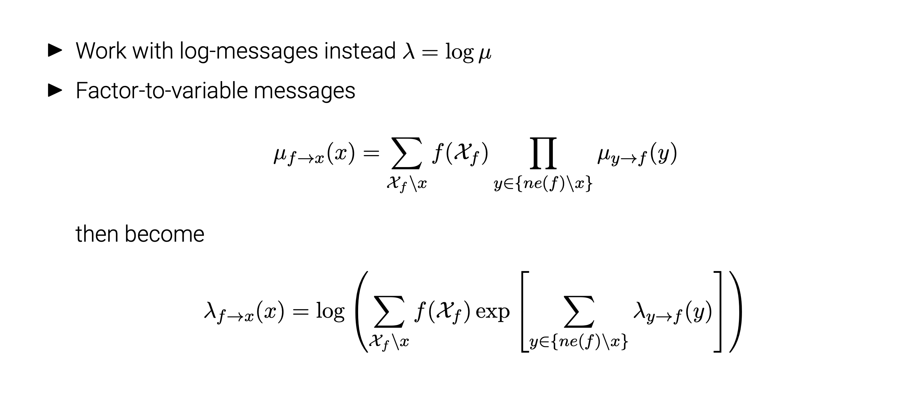
Max-Product Algorithm¶
For finding MAP estimate:
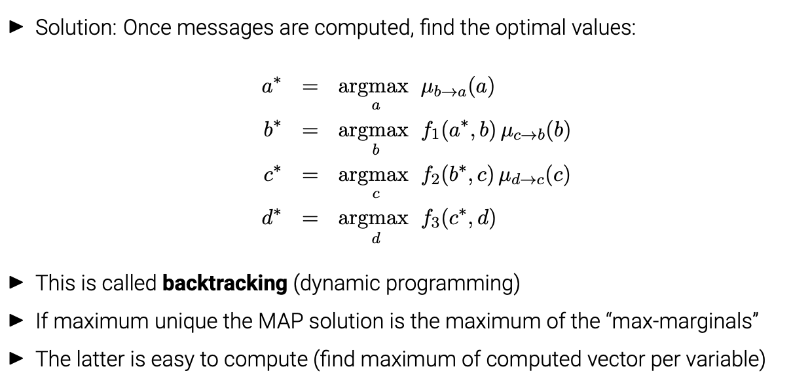
Loopy Belief Propagation¶
For Graphs with Loops
- Messages are well-defined but we lose exactness (approximate inference)
- No guarantee of convergence
- But often works well in practice!
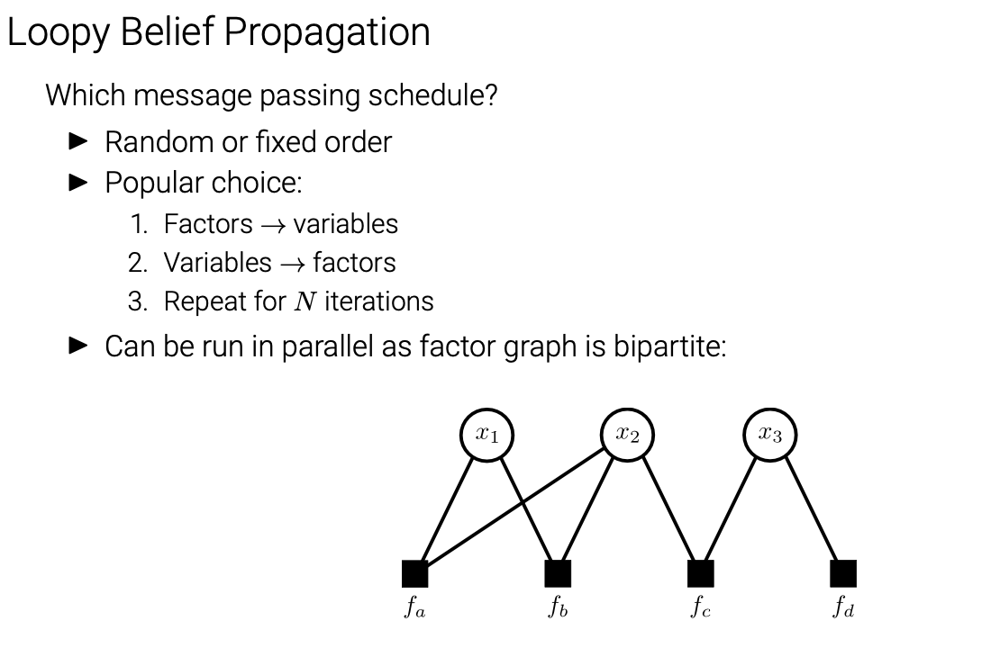
Applications¶
Example 1: Vehicle Localization¶
Max-Product BP for Vehicle Tracking
Tracking vehicle lane on highway. Let \(x_t \in \{1, 2, 3\}\) denote lane at time \(t\).
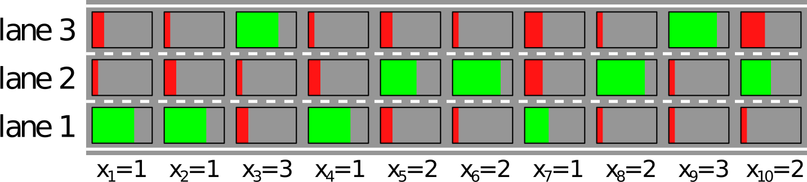
Problem
Selecting most likely lane independently leads to wrong estimates.
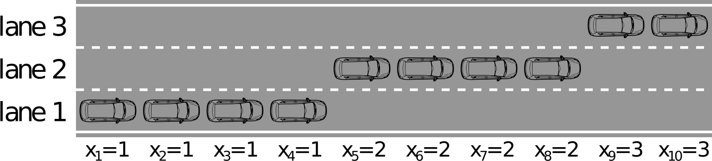
Solution: Hidden Markov Model
Transition matrix: \(\(g_\theta(x_i, x_{i+1}) = \begin{bmatrix} 0.8 & 0.2 & 0.0 \\ 0.2 & 0.6 & 0.2 \\ 0.0 & 0.2 & 0.8 \end{bmatrix}\)\)
Example 2: Image Denoising¶
Ising Model for Denoising
Denoise 10×10 binary image using MRF.
| Term | Formula |
|---|---|
| Unary | \(\psi_i(x_i) = [x_i = o_i]\) (observation) |
| Pairwise (Ising) | \(\psi_{ij}(x_i, x_j) = \alpha \cdot [x_i = x_j]\) |
Algorithm (Log-domain Max-Product):
For N=30 iterations:
- Update unary F→V messages: λ_{f→x}(x) = f(x)
- Update pairwise F→V: λ_{f→x}(x) = max_y [f(x,y) + λ_{y→f}(y)]
- Update V→F: λ_{x→f}(x) = Σ_{g∈ne(x)\f} λ_{g→x}(x)
Calculate max-marginals: γ_x(x) = Σ_{g∈ne(x)} λ_{g→x}(x)
MAP estimate: x* = argmax_x γ_x(x)
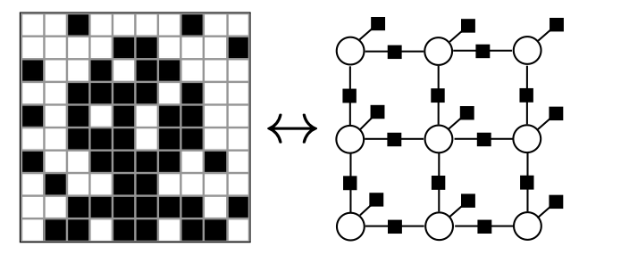
Stereo Reconstruction¶
Prior Assumption
Depth varies slowly except at sparse object discontinuities.
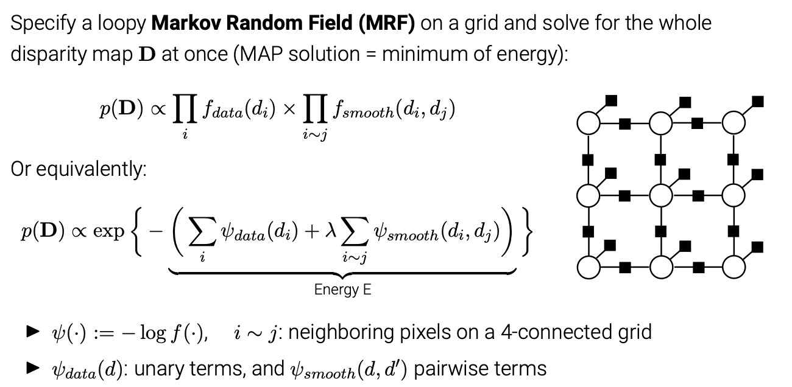
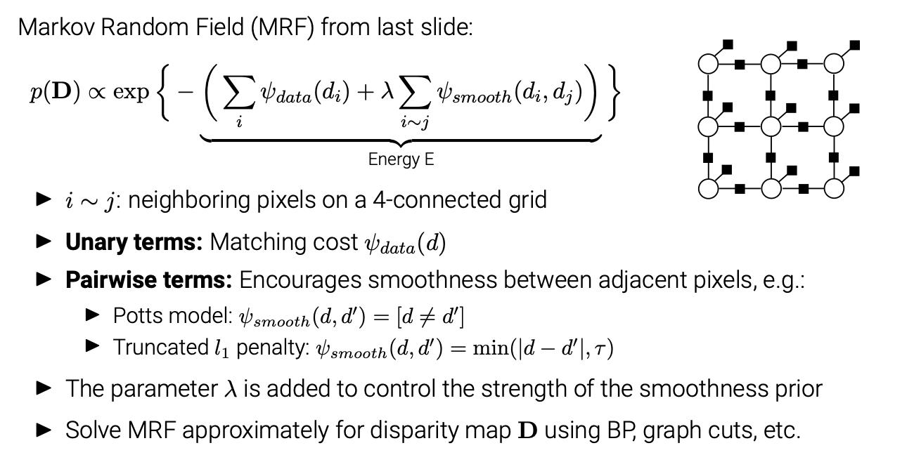
Energy Minimization: - Truncated penalty for robustness - \(\lambda\) controls smoothness trade-off
Non-local Priors¶
Local Limitations
Very local pairwise terms cannot handle reflections and other violations.
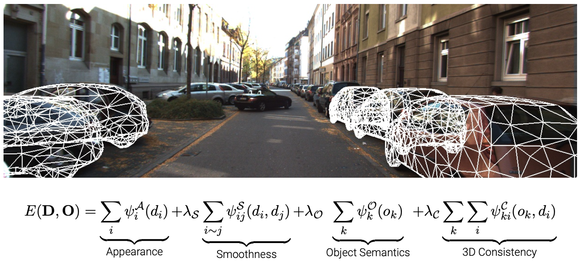
Solutions
- Object semantics
- 3D consistency constraints
Summary¶
- Block matching suffers from ambiguities
- Window size is a problematic trade-off
- Smoothness constraints resolve ambiguities
- Formulated as MAP inference in discrete MRF
- Solved via belief propagation, graph cuts, etc.
Multi-View Reconstruction¶
Voxel Representation:
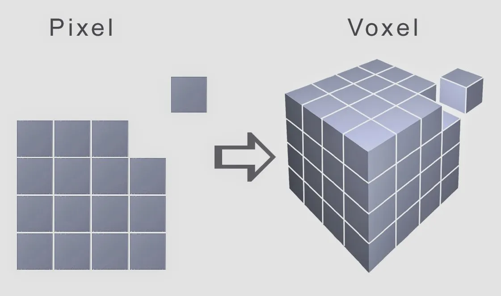
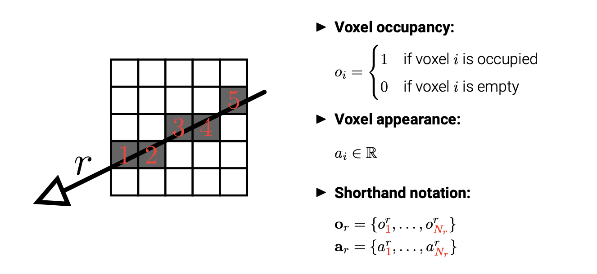
| Concept | Description |
|---|---|
| Voxel Occupancy | Whether voxel is occupied (binary) |
| Voxel Appearance | Visual properties (color, texture) |
Image Formation:
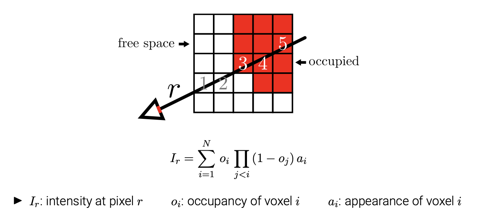
Key Insight
Only the first occupied voxel along a ray is visible.
Probabilistic Model:
- Unary: \(\phi_v(o_v) = \gamma^{o_v}(1-\gamma)^{(1-o_v)}\) where \(\gamma < 0.5\) (most voxels empty)
- Ray Potentials: Based on appearance consistency
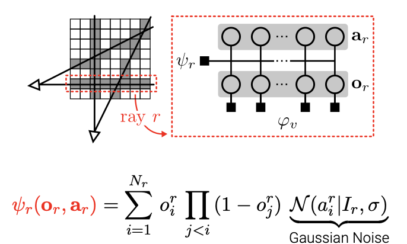
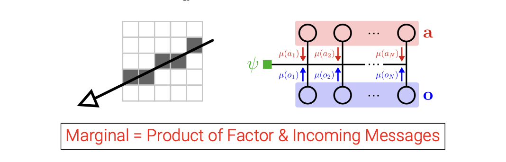
Bayes Optimal Depth:
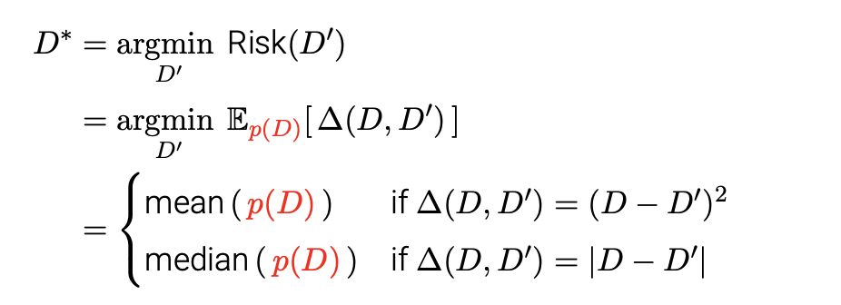
Optical Flow¶
Motion Field vs Optical Flow
| Concept | Definition |
|---|---|
| Motion Field | 2D projection of actual 3D motion |
| Optical Flow | 2D apparent motion (pixel displacement) |
They are NOT the same!
Determining Optical Flow¶
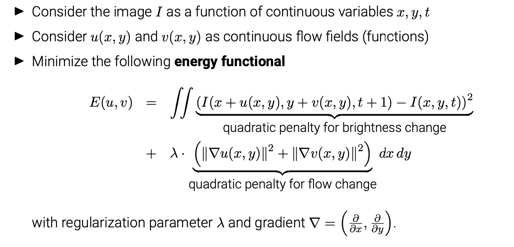
Aperture Problem
A single observation is not enough to determine flow!
Solution: Linearize Brightness Constancy
Horn-Schunck Energy:
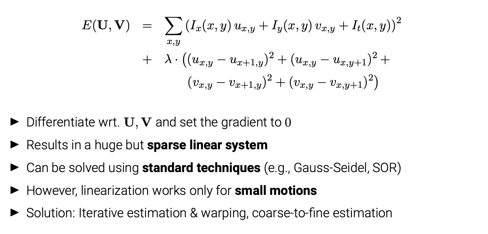
Over-smoothing
Quadratic penalty doesn't allow discontinuities, causing over-smoothing at boundaries.
Robust Estimation¶
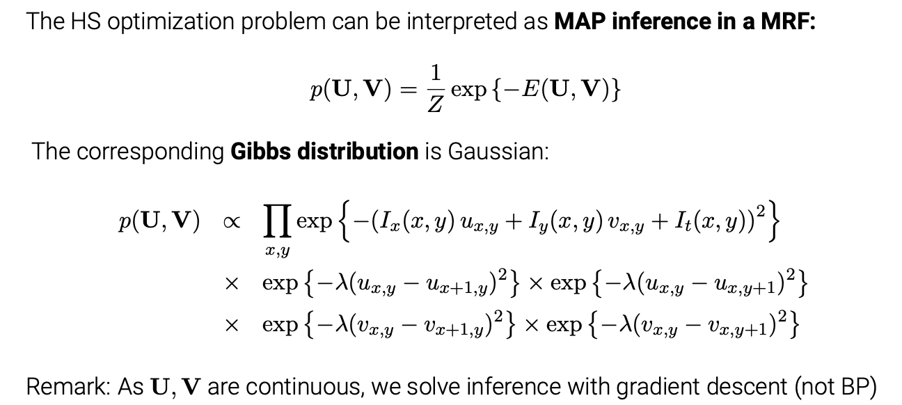
Assumption Violations
- Gaussian distributions = squared loss = not robust to outliers
- Outliers occur at object boundaries and specular highlights
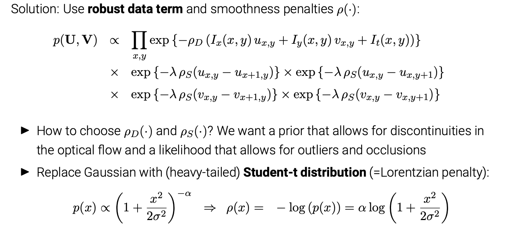
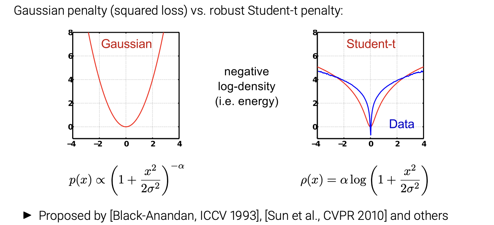
Learning in Graphical Models¶
Conditional Random Fields¶
How to estimate parameters like \(\lambda\)?
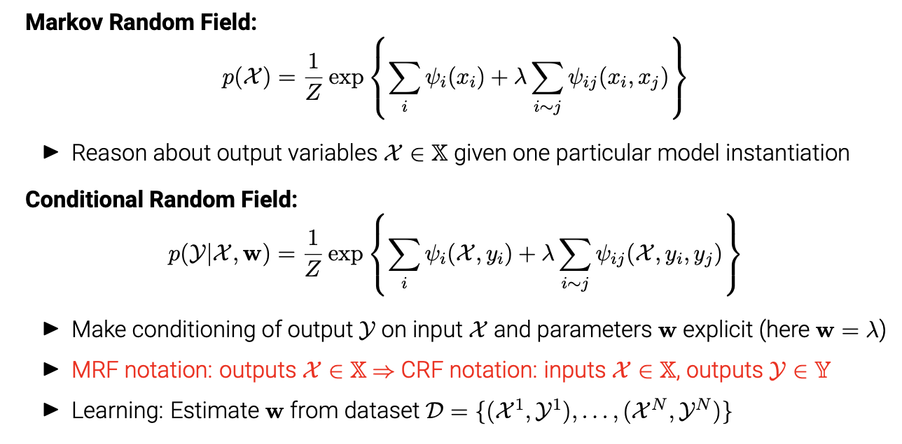
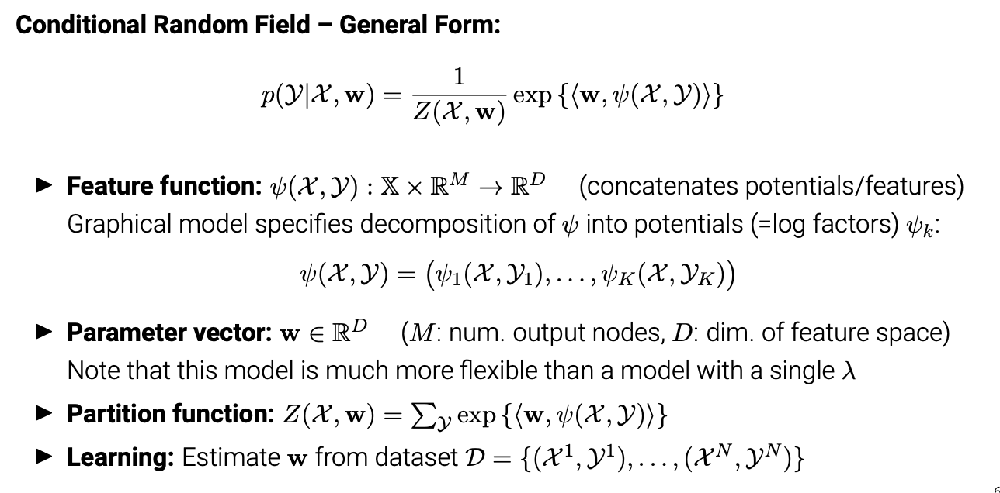
Parameter Estimation & Deep Structured Models¶
Reference
Refer to lecture slides for details.
创建日期: 2023年11月11日 00:20:53